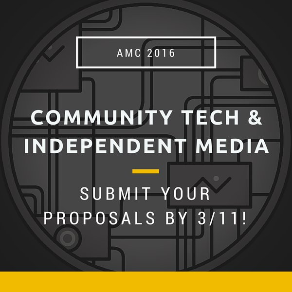
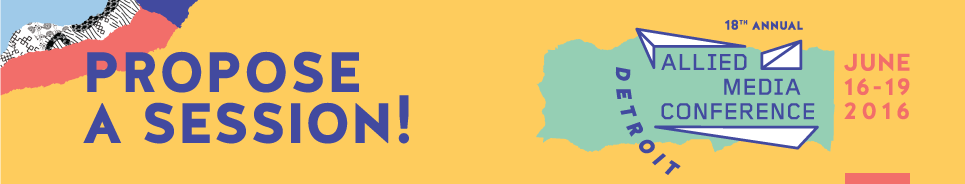

We are looking for community organizers, coders, journalists, independent media makers, free software activists, security and privacy advocates, and techno-activists! We need you!
The technology we use is shaping how we organize and communicate, and we can shape it too. With this track we will explore how, through building, appropriating, and owning our own tools, we can empower the communities we work with.
We are looking for hands-on workshops, meet-ups, skill-sharing sessions, conversations, or any other format session that can explore questions such as:
- who owns the tools we use and what are their goals?
- where is the data we leave on the internet going and how is it being used?
- how vulnerable are our organizations in the web?
- how does culture influence our work in media technology?
- what tools we can use for resisting surveillance and/or counter-surveillance?
- what strategies can we develop to appropriate the tools we use?
- what open source tools can we use that let us control where the data is stored?
- are our communities included in making the open web?
- what does "independent" mean in online media?
- how can we reproduce the successes in open source in other tools?
- the Internet is shaping our societies, but who is shaping the development of the Internet?
- what new, inclusive organizational forms can be introduced to technological development, and how?
We are looking for session proposals that cover:
Critical analyses of the tools that are used and who owns them
Understanding how the ecosystem of free software works and how we can contribute to it
Knowledge sharing about tools that people and organizations at AMC can use
Innovative ways of building technology
Tools and strategies that build community engagement and/or help us understand/share information/data about our communities
Processes for building inclusive technologies
Strategies for increasing diversity in technological development
Building safe spaces online and offline
Data journalism
